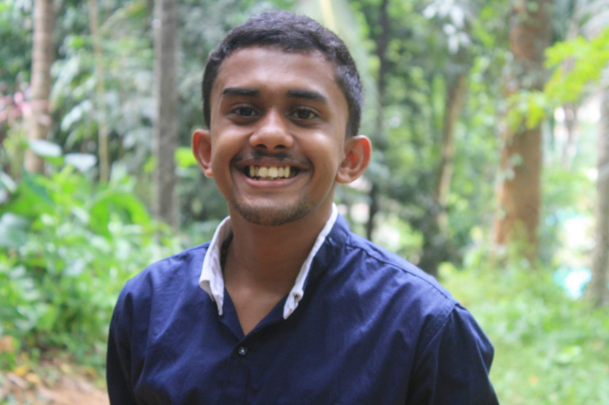

ALBIN JOSE
CONTACT
- +91-9207903837
- aj277116@gmail.com
- Vayalil(H) R.P.C P.O
- Vandanpathal, Mundakayam
LANGUAGES
- 1. English
- 2. Malayalam
Objective
My desire is to have a challenging career. I want to bring my enthusiasm and sense of creativity and confidence to the organization and to the people I work with. I will use my skills to fullfill the organization's goals and I can use my potential to work in a highly competitive environment.
Education
| Stream | College/School | Percentage |
|---|---|---|
| MCA | Marian college kuttikkanam | Appearing |
| BCA | Marian college kuttikkanam | 71 % |
| Higher Secondary | JJMMHSS, Yendayar | 74% |
| Secondary | AKJMHSS, Kanjirapally | 91% |
Technical Skills
HTML5, CSS3, JavaScript
Java
MySQL
Linux
Python, django
C,C++
Strengths
- Interpersonal skills
- Proactive
- Good Listener
- Team player
Achivements
- I was an active member of NSS and took part in many organized events.
- I was team member of National Youth Conference conducted by CSM and Jesus Youth.
- Served as Program General Coordinator of Jesus Youth Marian College